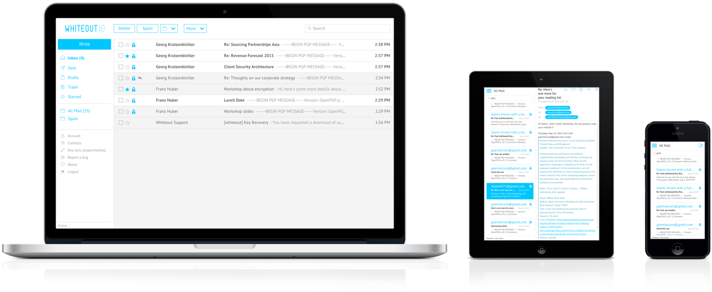

Cross-platform with Chrome Apps - a Developer Diary
When we started whiteout.io in 2013, our goal was to provide end-to-end encrypted email that is easy to use and that runs on all devices. We had a lot of technical discussions on which platform to use for development, but in the end decided to make a bet on the web and also its rate of progression as a foundation for cross-platform app development. This is what the app looks like today:

This decision was not obvious at the time given the recent developments from Facebook and LinkedIn shifting away from HTML5 to a native apps strategy. And for good reason. Recent data shows that mobile users are spending more time in apps than on the mobile web. Since many apps are written with web technology it's not clear if this is because of native vs. web. But it’s safe to assume one aspect is that native user interfaces are often perceived as faster and more fluid than their HTML5 counterparts.
This does not mean that fast and fluid user experiences cannot be built using web technology. In fact after Facebook announced its shift to native, Sencha released a proof of concept called fastbook, which showed that it is indeed possible to build native like app experiences using nothing but web technology. It was clear that it was cheaper and easier to build a great experience for a single platform using native. But since we wanted Whiteout Mail to run everywhere, we needed a more scalable approach.
The bet
Inspired by fastbook and some other apps and ui frameworks that we had been testing internally for our first proof of concept implementation of Whiteout Mail, we decided to make a bet on HTML5. This bet was based on the following hypotheses:
Evergreen browsers such as Chrome and Firefox are increasing the rate of innovation on the web and these would inevitably lead to evergreen WebViews that are used as runtimes in frameworks such as Cordova.
Platform and hardware capabilities, that were traditionally only exposed as native apis via Objective C on iOS or Java on Android, would surface as standardized apis for JavaScript.
Development tools and frameworks would improve to the point where you would press only a button and out comes your app for: Windows, Mac, Linux, iOS, Android.
This is why we are excited about Firefox OS. We don't believe it will compete with Android in terms of marketshare anytime soon, but Mozilla has always put pressure on other Browser/OS vendors like Google by spearheading standardization.
Fast forward to today
We aren't quite there yet, but having spent the last year developing for the Chrome Apps platform, I think we're pretty damn close.
Android 4.4 was released with the Chromium WebView and Android 5.0 now has an autoupdating evergreen WebView. To bridge the gap to older devices and OS versions, developers can use the CrossWalk WebView to deploy an up-to-date runtime to Android 4.0+ (basically over 90% of the current Android installed base).
Apple has released a very fast WebView for iOS 8. There are still some warts and I won’t go into all the details here. But you can read about the new WKWebView in Sencha’s post.
Many apis like raw TCP sockets that are required for implementing email protocols like IMAP/SMTP aren’t standardized yet. But there are proprietary apis to fill the gap e.g. chrome.sockets and StreamSocket. They can be shimmed easily to work like the emerging standard api using our tcp-socket shim. This allowed us to develop email.js, a toolbox for writing cross-platform email applications in pure JavaScript.
What are Chrome Apps?
For anyone who is new to Chrome Apps here are two resources to get started.
The official documentation: https://developer.chrome.com/apps/about_apps
A great introduction video: http://youtu.be/f3NctLbtsNE
Why we chose Chrome Apps
The main reasons for us to use chrome apps are:
1. Security: Since Whiteout Mail stores the user's private PGP key locally there are a lot of advantages to Chrome Apps when compared to the normal drive by web. I've written about threat modeling for browser crypto in detail here.
2. Distribution: Most users go to their platform’s native app store to discover new apps. Chrome Apps support packaging for all relevant platforms (Android, iOS, Windows, Mac OS, Linux).
3. Offline: Email clients need to work when users are offline. Users want to read and write messages on a train or a flight. The client should sync whenever there’s a connection but also work when there isn’t one.
Our Experience with Chrome Apps
Building a complete email client in JavaScript with full IMAP / SMTP / MIME / OpenPGP support wasn’t an easy task, but the Chrome Apps platform provided a good foundation for this journey. Here is a brief overview of our experience developing Whiteout Mail.
The desktop
We started on the desktop since that was the first platform Chrome Apps were officially supported. This has turned out to be a good place to start. Chrome Apps are currently the most stable deployment path for cross-platform HTML5 packaged apps. We tried Firefox Packaged Apps but couldn't even debug them for the desktop.
One thing to keep in mind is that Chrome Apps have several more constraints than regular web apps like Content Security Policy (CSP). You may need to sandbox certain content into iframes and using apis like eval and inline scripts is not allowed. This is one reason we decided to use angular.js as it supports CSP out of the box. One valuable experience we had here is that starting from a constrained architecture is always easier than the other way around. So it's best to start using CSP early if you intend to support Chrome Apps.
You can try our desktop app here.
Android
Next we ported the app to Android using the Chrome Cordova Apps. This turned out to be a surprisingly simple task due to the above mentioned Crosswalk WebView. The main challenge here was getting the back button for Android to work correctly. To be fair this was mainly because we forgot to handle the browser history at first in angular. Had we done this right from the beginning, the back button would have worked out of the box.
You can try the Android app here.
iOS
Finally we went on to tackle iOS. This turned out to be the hardest of the platforms due to some issues with the Chrome Api plugins. Thankfully the team behind Mobile Chrome Apps was very helpful and supportive. Anytime we had an issue, we received a response promptly on GitHub. Bugfixes also landed quickly in upcoming versions of cca (Chrome Cordova Apps’ command line tool).
The iOS version is still in closed beta using Apple’s TestFlight service, but we will release this very soon.
The Web
We were even able to get a full version of the app running on the web using the same code-base as for the Chrome Apps. We did this by extending our tcp-socket shim to use socket.io (to proxy TCP connections required for IMAP and SMTP) and Forge (a JavaScript implementation of TLS). This way we were able to terminate the TLS session on the user’s machine so that our proxy does not see any plaintext user data like passwords or email message content.
You can try the webmail version of Whiteout Mail here.
The code
In case you’re interested you can check out all of the code on GitHub since the Whiteout Mail client is open source.
Summary
The Chrome Apps platform is pretty close to the write once run anywhere dream developers aspire to. The main advantage to using something like Chrome Apps or Cordova is that you can deploy your web app using each platform's native app store, since this is where most users go to discover new content and apps.
There are of course still some caveats e.g. missing standardization of certain apis and packaging formats, but time will fix all of these issues. Standardization always trails innovation and without pioneers like Chrome Apps we would have to iterate on these concepts within the standards bodies, which is in nobody’s best interest.
To get a feeling for where all this is heading here’s a great summary of the 2014 Chrome Developer Summit. It seems like Google will be focusing less on proprietary apis in Chrome Apps and more on bringing all of this goodness to the open web. They intend to keep supporting Chrome Apps since it’s the native development platform for Chromebooks but it's clear where the focus will be.
What does all of this mean for developers? In short I would definitely recommend developing for Chrome Apps. Even if Google decided to deprecate Chrome Apps tomorrow, you could still reuse 99% of your code on the open web (as we have with the Webmail version of Whiteout Mail). So there’s not a lot of risk for vendor lock-in. All in all Chrome Apps have become a very robust development environment and tooling like remote debugging in Chrome has matured to a point that the web now has a productive development workflow.